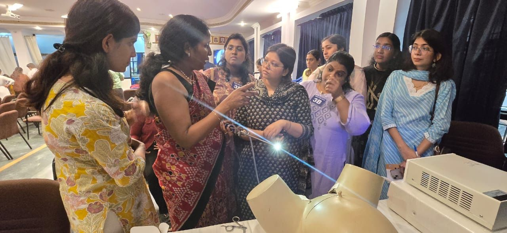
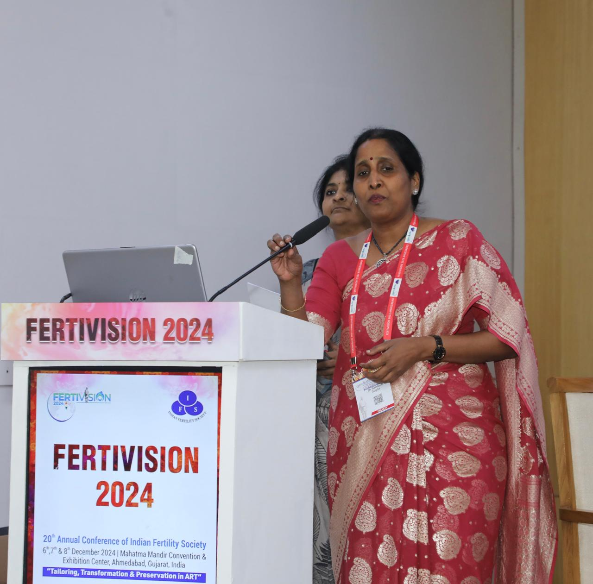
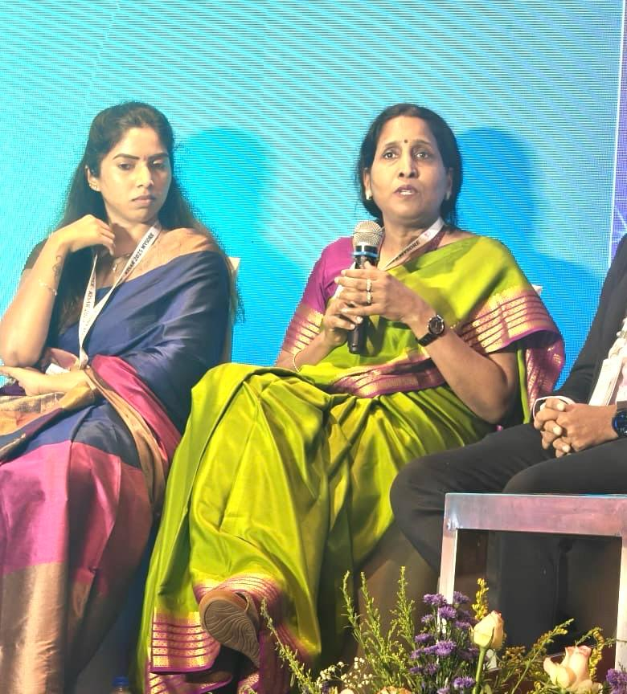

Beyond the Stethoscope: My 25-Year Journey in Reproductive Medicine
Discover the passion, empathy, and 25 years of medical expertise that drive Dr. Santosh Gupta's approach to fertility care.

What to Do When IVF Fails: Investigating Recurrent Implantation Failure
Experienced a failed IVF cycle? Learn how we investigate RIF and the advanced protocols—like PGT-A and Hysteroscopy—used to overcome it.

Understanding Severe PCOS: Impacts on Fertility and Treatment Options
Polycystic Ovary Syndrome is a leading cause of infertility. Discover how tailored protocols and lifestyle adjustments can help you conceive.

Beyond Basic IUI: How Severe Male Factor is Treated with ICSI
When sperm count or motility is severely low, ICSI offers a powerful solution. Learn how this microscopic technique changes the game.